Главная / О центре
Частный образовательный центр для детей от 3,5 лет
«Кампус Зил» создан, чтобы дополнить школу тем, чего в ней не хватает: маленькие группы, своё оборудование и учитель, который успевает заметить каждого. Миссия центра: правильное образование, развитие и помощь родителям.
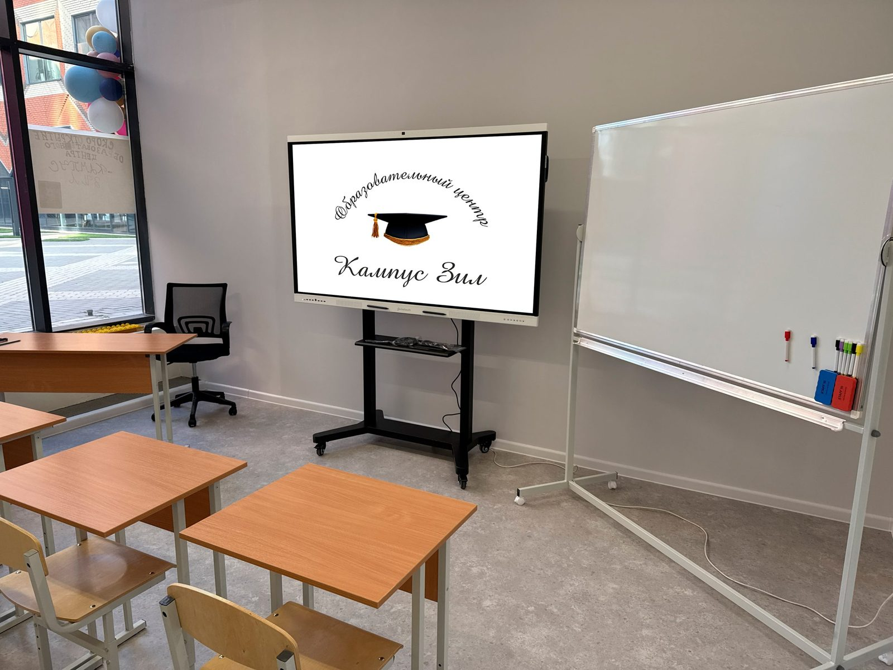
Кто мы
Центр основал педагог высшей квалификационной категории с многолетним опытом в негосударственном образовании. Он изучал и адаптировал методики европейских учебных заведений, а сегодня сам ведёт робототехнику, конструирование, информатику и телестудию.
Мы частный центр с очной формой обучения. Индивидуальный подход у нас касается всех: учеников, учителей и родителей. Ребёнок в центре внимания, учитель не перегружен часами, а родитель всегда знает, над чем сейчас работает его ребёнок и зачем нужны домашние задания.
Есть и онлайн‑направление, но очные занятия мы считаем эффективнее.
Чем мы отличаемся от школы
Чем занимаемся
-
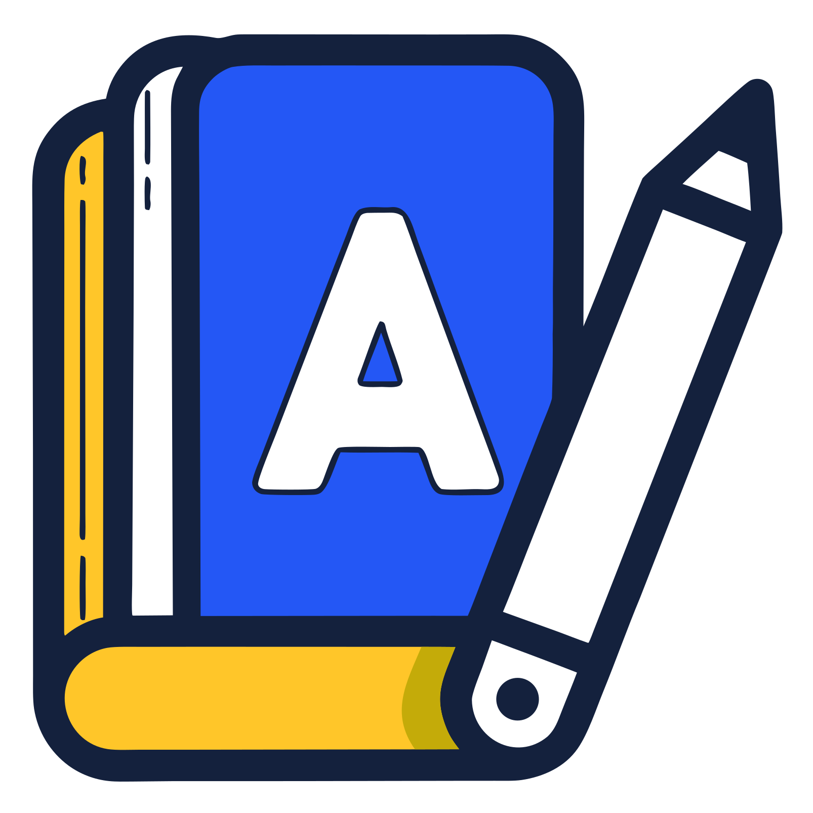
Подготовка к школе
Речь и мышление, мелкая моторика, математические навыки, воображение, подготовка к письму, общение в группе. Основы каллиграфии и скорочтения, подготовка к проектной деятельности в школе.
-
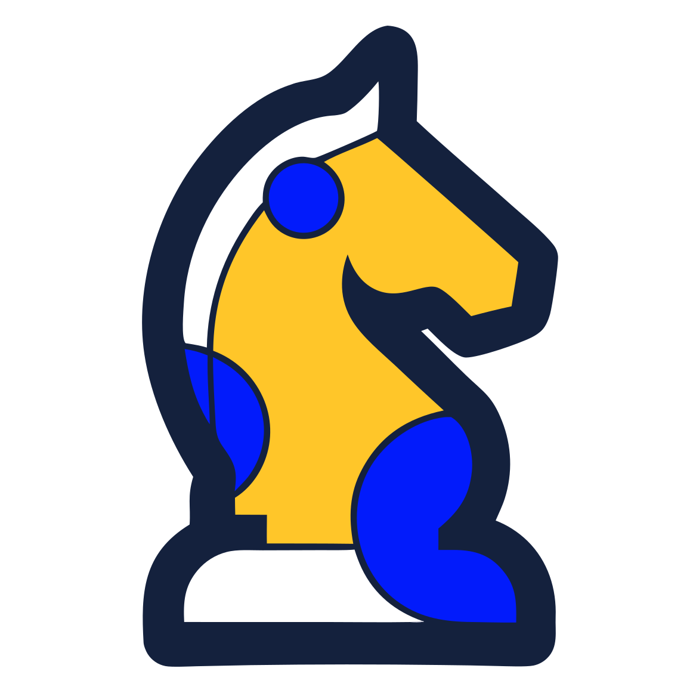
Шахматы
Турниры внутри центра и выездные соревнования, участие в них по желанию родителей. Развитие интеллекта и удовольствие от любимой игры.
-
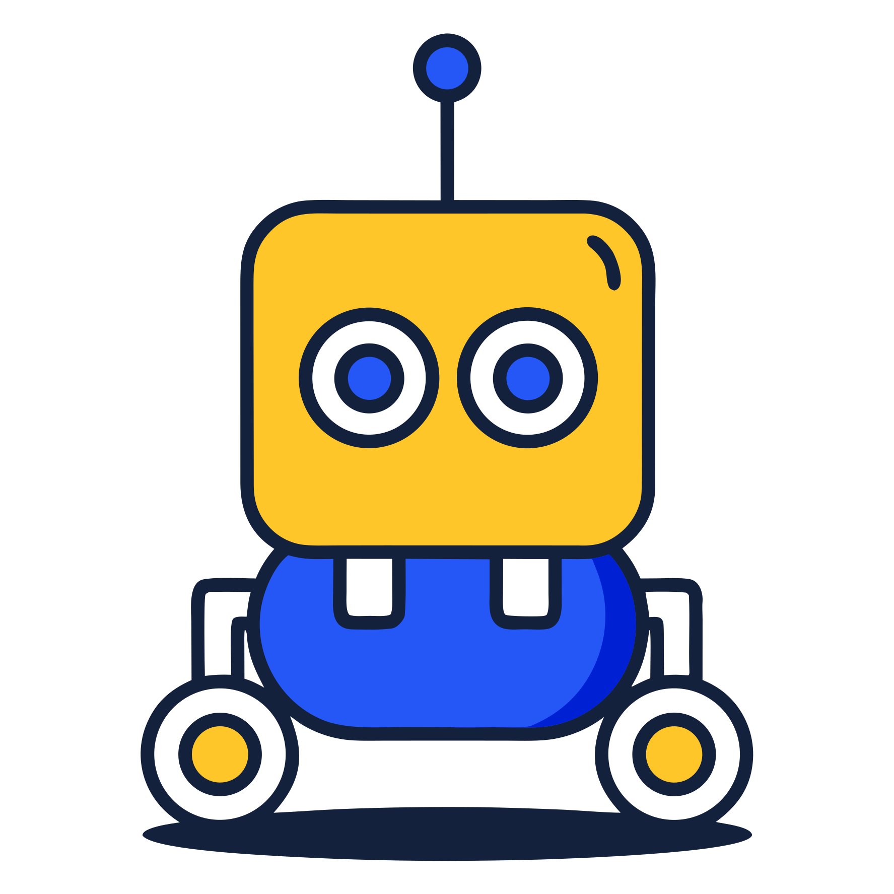
Робототехника
С 4 лет дети конструируют по образцу, ищут нужные детали и в конце занятия проверяют модель с пульта. Учитель объясняет физику деталей и развивает пространственное мышление. Робототехника работает и как средство против неусидчивости и тревожности.
-
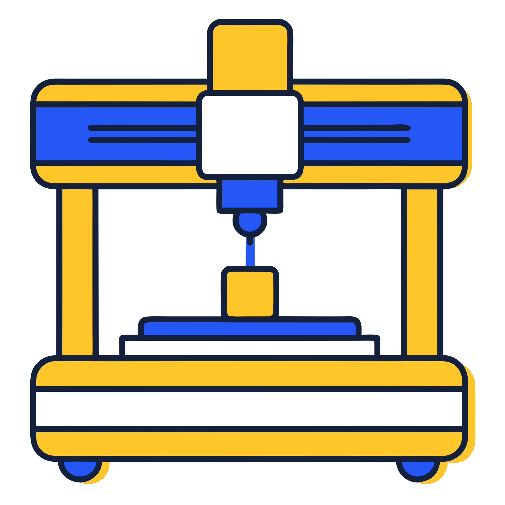
3D‑печать и ИИ
С 9 лет: нейросеть превращает фантазию в 3D‑объект, а принтер печатает его. Готовые фигурки дети расписывают сами.
-
Английский с носителем
Носитель языка на уроках и в разговорном клубе по интересам: заранее выбираем тему, смотрим материал и обсуждаем в мини‑группе.
-
Телестудия
Отдельный кабинет со своим оборудованием: многокамерная съёмка, звук, монтаж, спецэффекты, озвучивание. Дети пробуют профессии оператора, монтажёра, корреспондента, сценариста и режиссёра.
-
Астрономия и планетарий
Собственный кубический планетарий, придуманный в центре. Набираем группу для изучения Вселенной: движение, строение и происхождение небесных тел.
-
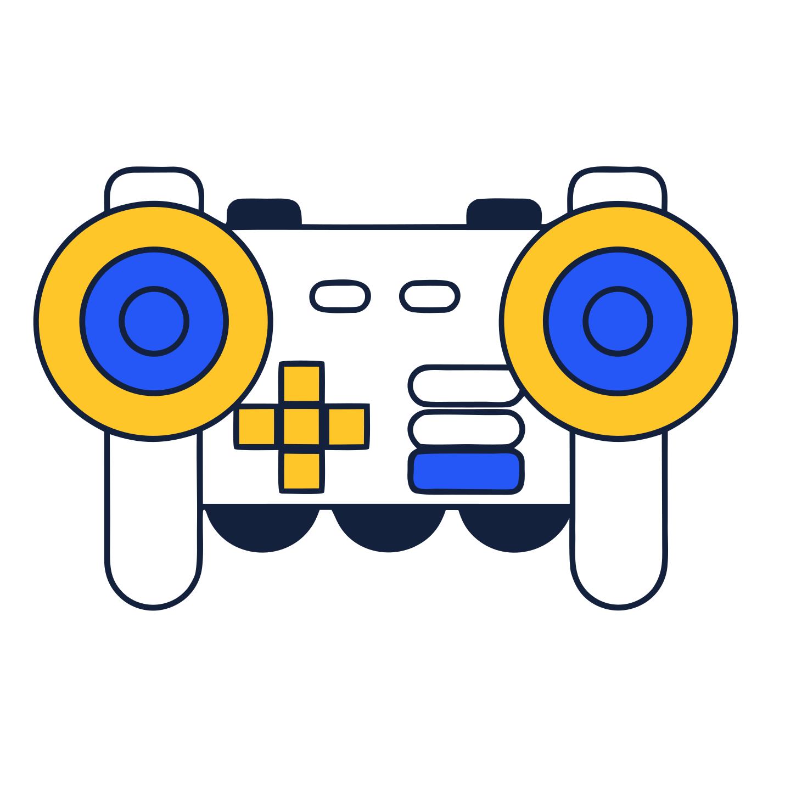
Информатика
Информатика с нуля и информатика для спортсменов. Создание игр, Scratch, первые алгоритмы.
-
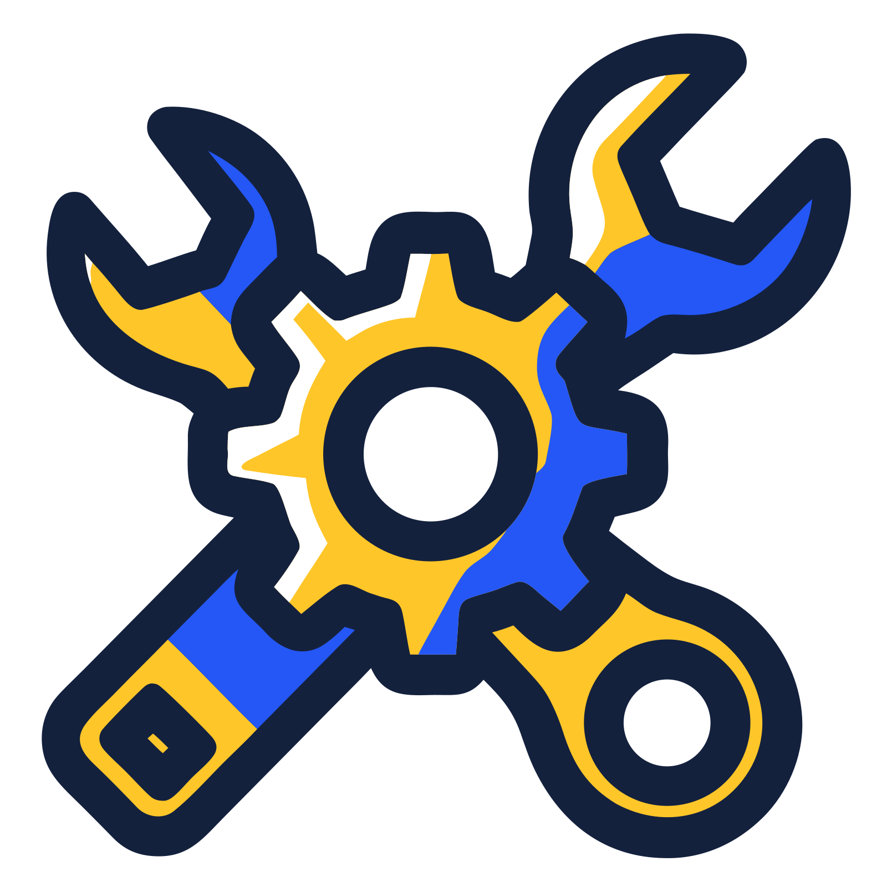
Конструирование
Arduino, изделия на 3D‑принтере, фрезерный станок по дереву и пластику, лазерный станок. Каждое занятие оформлено как мини‑проект с результатом в конце.
Не нашли нужный курс? Напишите нам, возможно, мы просто его ещё не описали.
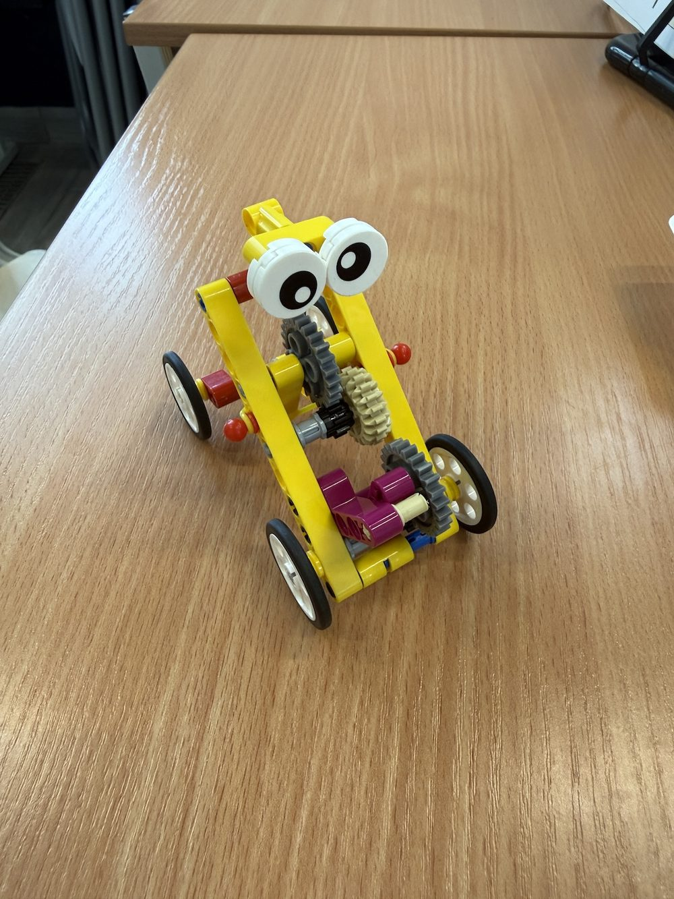
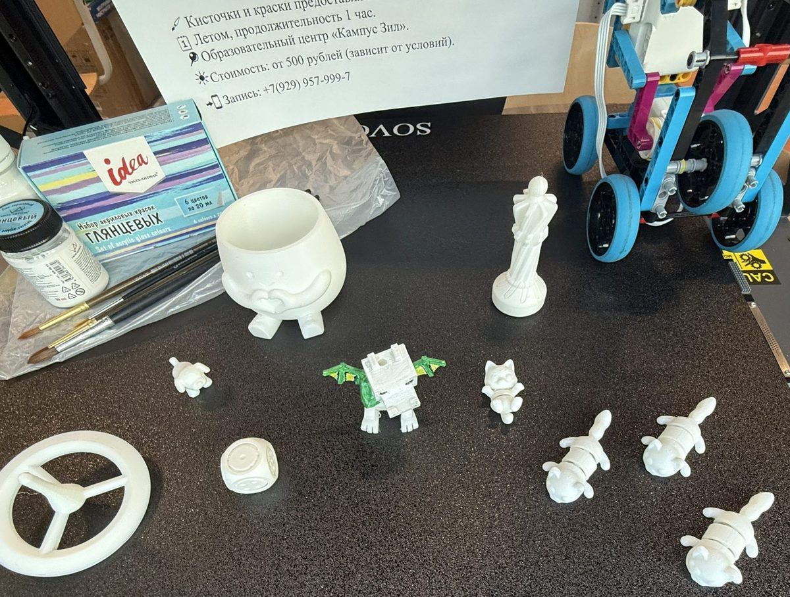
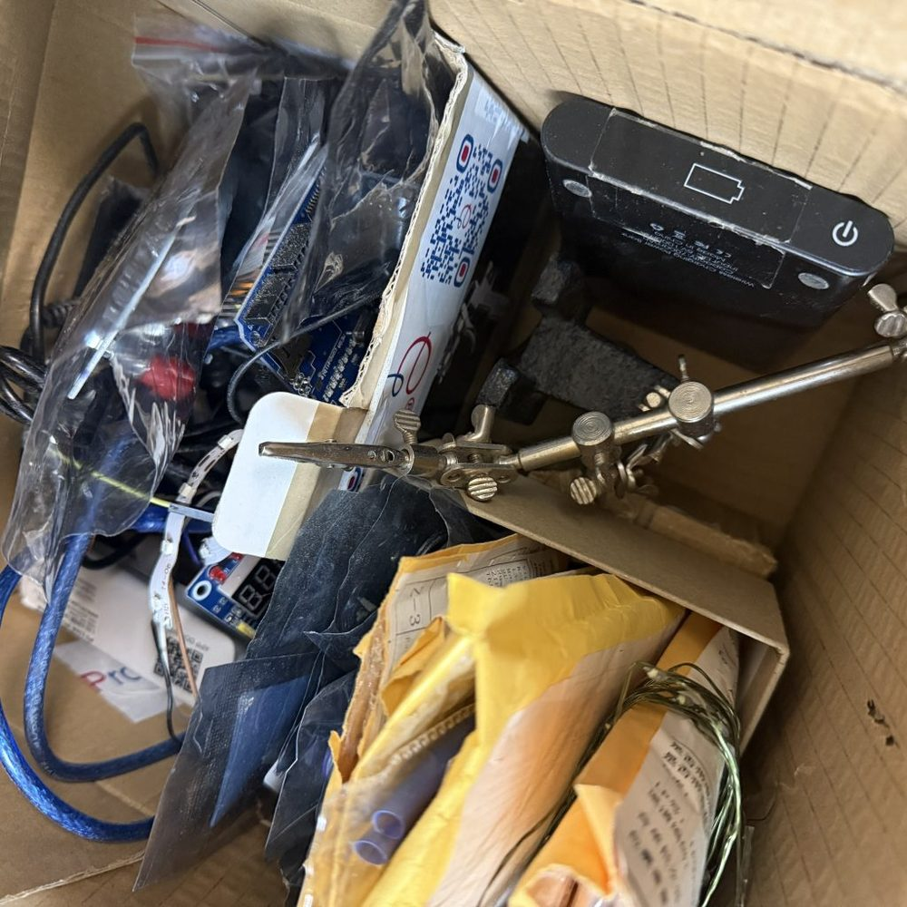
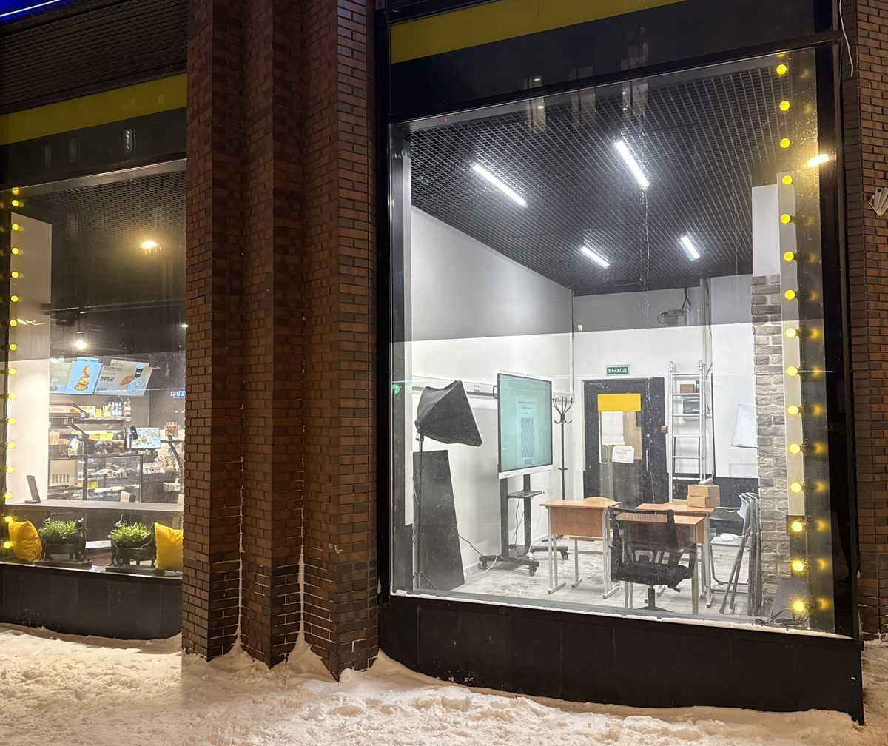
Arduino: что делаем на занятиях
Arduino, это маленький контроллер с памятью для программы, который автоматизирует процессы. Дети собирают гирлянду, шлагбаум, светофор, сигнализатор протечки, звуковую шкатулку, автополив, светодиодную матрицу.
По ходу разбираем, почему светодиод боится тока, как RGB‑диод светит любым цветом, зачем розетке 220 вольт, а Arduino хватает пяти, и как контроллер управляет мощными устройствами. Язык программирования: C++.
Перекус от партнёров
Если ребёнок занимается два часа подряд, можно заказать обед из кафе рядом с центром. Комбо из супа, салата, горячего и десерта, меню и посуда могут отличаться.
- Small: суп и горячее
- 315 ₽
- Medium: суп, салат, горячее
- 485 ₽
- Big: суп, салат, горячее, десерт
- 585 ₽
Закрытый клуб «Кампус Зил»
Для семей, которые занимаются постоянно: личный кабинет по всем курсам, электронный дневник достижений, фото и видео с занятий, вопросы учителю и домашние задания онлайн, приоритетная запись на мастер‑классы.
Чтобы вступить, скажите администратору или напишите в Telegram или MAX.
Приходите посмотреть центр
Первый урок бесплатный. Покажем классы, телестудию и планетарий, подберём группу по возрасту.
Записаться на пробный урок